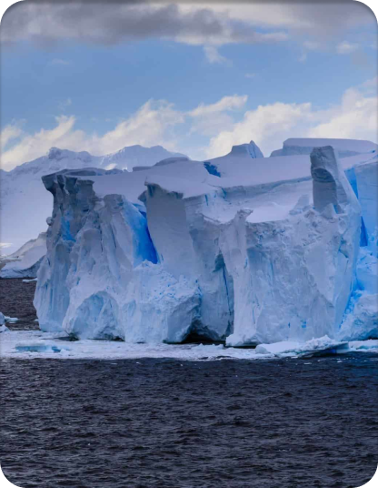

Consciência Marinha

As mudanças climáticas estão afetando profundamente os oceanos, desencadeando uma série de impactos que ameaçam a vida marinha e, consequentemente, o bem-estar humano. Os oceanos, que cobrem mais de 70% da superfície terrestre, desempenham um papel vital na regulação do clima global, absorvendo grandes quantidades de dióxido de carbono (CO₂) e calor.
No entanto, as alterações climáticas estão perturbando esses processos naturais de maneiras alarmantes, causando o Aquecimento dos Oceanos, Acidificação dos Oceanos, Elevação do Nível do Mar e Alteração das Correntes Oceânicas.